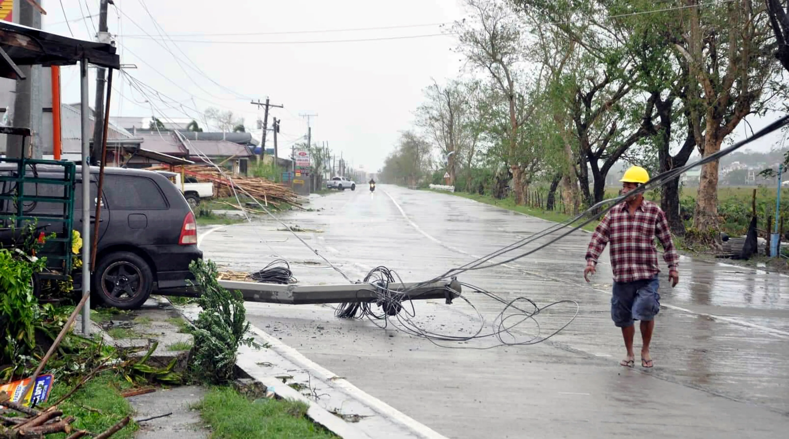
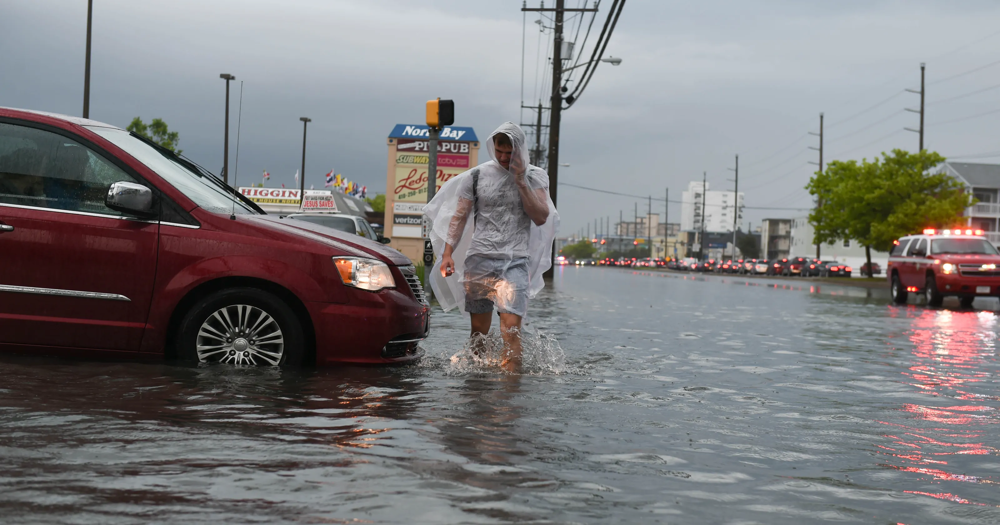

Types of Calamities
Typhoons:

Description: The Philippines is frequently hit by typhoons (tropical cyclones) due to its location in the Pacific Typhoon Belt. These storms bring strong winds, heavy rainfall, and storm surges, causing widespread flooding, landslides, and damage to infrastructure.
Earthquakes:

Description: The Philippines is situated on the Pacific Ring of Fire, making it prone to seismic activities. Earthquakes can result in infrastructure damage, landslides, and tsunamis, especially in coastal areas.
Volcanic Eruptions:

Description: The Philippines has several active volcanoes. Eruptions can lead to ashfall, pyroclastic flows, and lava flows, causing evacuation of nearby communities and disrupting daily life.
Flooding:

Description: Heavy rainfall, often associated with typhoons, can lead to widespread flooding. Urban areas are particularly vulnerable due to poor drainage systems and deforestation.
Landslides:

Description: Steep terrain in some regions makes landslides a common occurrence, especially during heavy rains and typhoons. Deforestation and improper land use practices can exacerbate this problem.
Tsunamis:

Description: Earthquakes, especially those occurring under the sea, can trigger tsunamis. Coastal areas are at risk of large waves that can inundate low-lying areas.
Droughts:

Description: Periods of prolonged dry weather can lead to droughts, affecting agriculture and water supply. El Niño events can exacerbate drought conditions in the country.
Man-Made Disasters:

Description: Human activities, such as deforestation, illegal logging, and improper urban planning, contribute to environmental degradation and can exacerbate the impact of natural disasters.
Pandemics:
Description: While not exclusive to the Philippines, pandemics, such as the COVID-19 pandemic, can have widespread health, economic, and social impacts on the country.